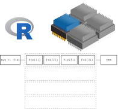
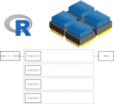
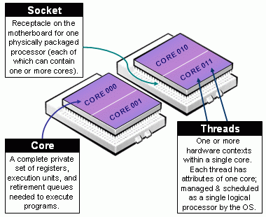
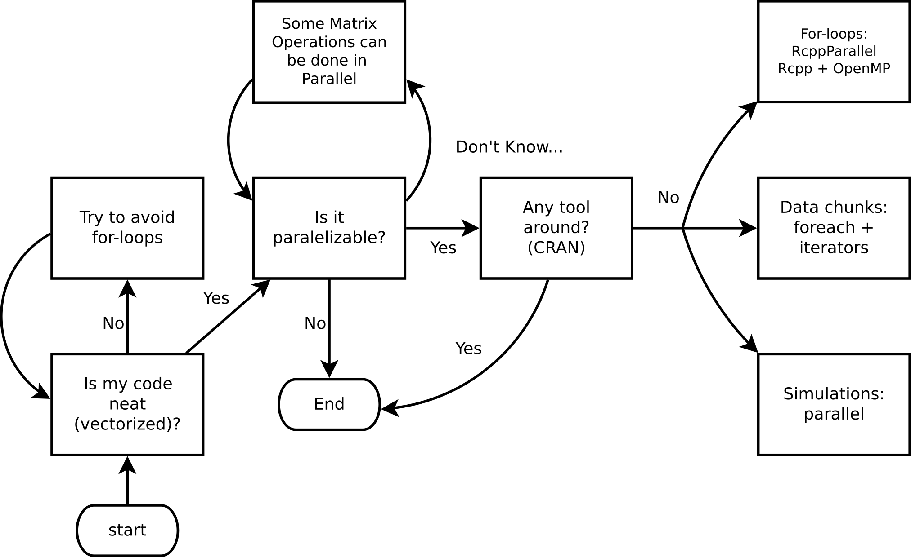
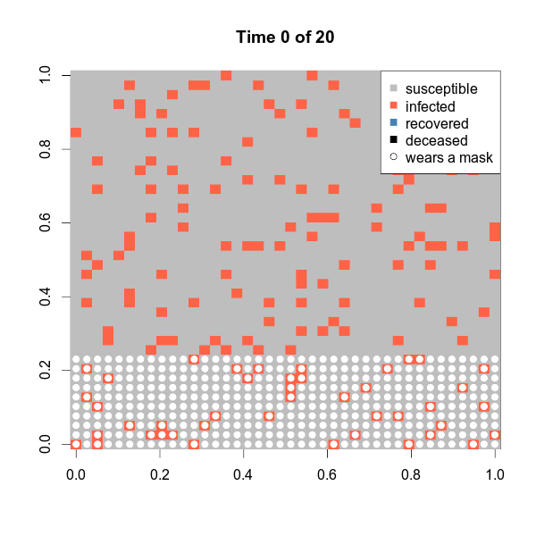
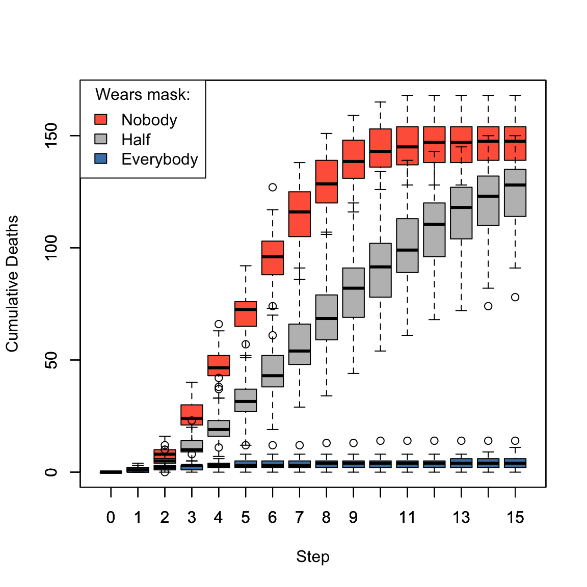
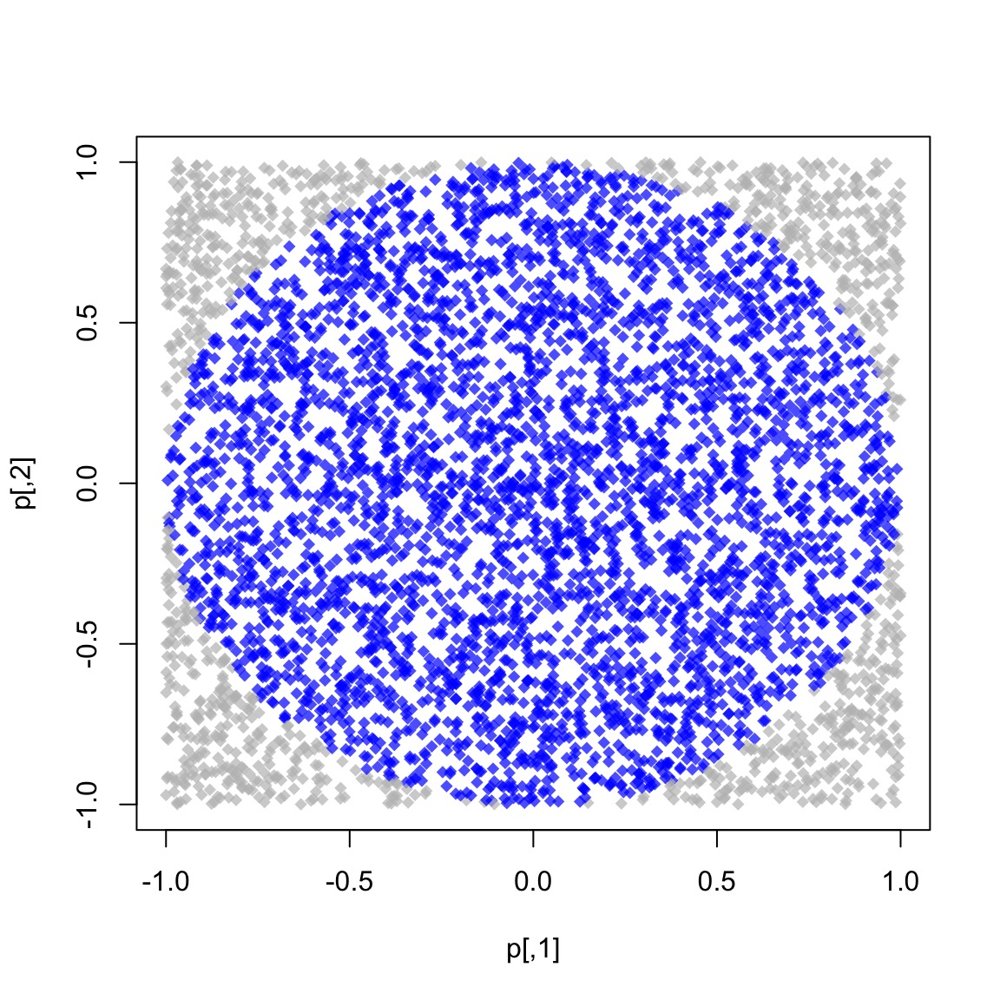

forLoopRoots <- function(n){
roots <- rep(NA, n)
for(i in 1:n){
roots[i] <- sqrt(i)
}
return(roots)
}
head(forLoopRoots(10000))[1] 1.000000 1.414214 1.732051 2.000000 2.236068 2.449490PM 566: Introduction to Health Data Science
Often, we will want to do the same task (or similar tasks) many times with only slight differences.
Some tasks are very “computationally expensive” meaning they require a lot of time or other resources to run.
In these cases, computational efficiency can be very important. It can mean the difference between a job that takes two hours to run as opposed two weeks!
We’ve seen various examples of loops so far in this class.
Classic examples that are common to most programming languages include for and while loops.
Other types of loops are more specific to R, such as the various *apply functions (apply, sapply, lapply, etc.).
Knowing when to use a loop and when not to is a critical concern in computational efficiency.
Let’s say we want to take the square roots of the numbers 1 to 10,000. We could achieve this in a number of different ways.
Here, we use a for loop:
forLoopRoots <- function(n){
roots <- rep(NA, n)
for(i in 1:n){
roots[i] <- sqrt(i)
}
return(roots)
}
head(forLoopRoots(10000))[1] 1.000000 1.414214 1.732051 2.000000 2.236068 2.449490Here, we’ll use sapply:
SapplyRoots <- function(n){
roots <- sapply(1:n, sqrt)
return(roots)
}
head(SapplyRoots(10000))[1] 1.000000 1.414214 1.732051 2.000000 2.236068 2.449490How fast are these methods? Let’s use the microbenchmark package to find out!
library(microbenchmark)
microbenchmark(forLoopRoots(10000), SapplyRoots(10000))Unit: microseconds
expr min lq mean median uq max
forLoopRoots(10000) 186.386 202.007 208.8872 209.264 214.9015 235.709
SapplyRoots(10000) 987.731 1075.553 1190.6945 1099.600 1158.5575 4815.163
neval
100
100But do we really need a loop for this job? Here, we’ll use vectorization to perform all the calculations “at once.”
VectorizedRoots <- function(n){
sqrt(1:n)
}
head(VectorizedRoots(10000))[1] 1.000000 1.414214 1.732051 2.000000 2.236068 2.449490That’s a lot faster!
library(microbenchmark)
microbenchmark(forLoopRoots(10000), VectorizedRoots(10000))Unit: microseconds
expr min lq mean median uq max
forLoopRoots(10000) 199.506 204.467 212.68094 208.1775 217.669 296.430
VectorizedRoots(10000) 7.913 14.637 19.96413 15.5185 16.687 424.637
neval
100
100Anytime that you can use vectorized computation, you should! It will (almost) always save you a lot of computation time!
Let’s say there’s a relatively simple operation you want to perform. You know how to write the code for it, but you’re pretty sure there’s also a built-in function that performs the same task. Which should you use?
Generally speaking, you should aim to write as little code as possible. Built-in functions (especially in the base package) are highly optimized and likely to run much faster than manual implementations.
Let’s say we have a long vector and we want to find all of the repeated elements.
set.seed(1)
vec <- sample(letters, 100, replace = TRUE)
vec [1] "y" "d" "g" "a" "b" "w" "k" "n" "r" "s" "a" "u" "u" "j" "v" "n" "j" "g"
[19] "i" "o" "u" "e" "i" "y" "n" "e" "e" "b" "j" "y" "l" "o" "a" "t" "c" "f"
[37] "j" "j" "f" "o" "t" "t" "z" "l" "y" "w" "f" "y" "h" "l" "y" "w" "x" "f"
[55] "z" "g" "s" "j" "f" "x" "n" "b" "m" "r" "v" "n" "f" "a" "s" "s" "h" "f"
[73] "w" "l" "f" "h" "g" "k" "q" "d" "m" "h" "y" "p" "y" "w" "n" "t" "g" "m"
[91] "v" "l" "p" "a" "m" "u" "f" "q" "i" "g"We can achieve this with two nested loops:
method1 <- function(x){
# first element cannot be a duplicate
out <- sapply(2:length(x), function(i){
matches <- sapply(1:(i-1), function(i2){
x[i2] == x[i]
})
return(any(matches))
})
out <- c(FALSE, out)
return(out)
}
vec[1:11] [1] "y" "d" "g" "a" "b" "w" "k" "n" "r" "s" "a"method1(vec)[1:11] [1] FALSE FALSE FALSE FALSE FALSE FALSE FALSE FALSE FALSE FALSE TRUEOr slightly faster with a loop and vectorized comparison:
method2 <- function(x){
# first element cannot be a duplicate
out <- sapply(2:length(x), function(i){
return(any(x[1:(i-1)] == x[i]))
})
out <- c(FALSE, out)
return(out)
}
method2(vec)[1:11] [1] FALSE FALSE FALSE FALSE FALSE FALSE FALSE FALSE FALSE FALSE TRUEmicrobenchmark(method1(vec), method2(vec))Unit: microseconds
expr min lq mean median uq max neval
method1(vec) 2142.660 2267.4230 2463.2132 2326.7910 2430.623 4072.981 100
method2(vec) 73.103 79.3555 113.7898 83.4145 89.954 1958.980 100But the real speed-up comes when we use the base function duplicated:
method3 <- function(x){
duplicated(x)
}
method3(vec)[1:11] [1] FALSE FALSE FALSE FALSE FALSE FALSE FALSE FALSE FALSE FALSE TRUEmicrobenchmark(method2(vec), method3(vec))Unit: microseconds
expr min lq mean median uq max neval
method2(vec) 75.809 80.1345 84.51453 82.3895 87.8015 116.768 100
method3(vec) 1.353 1.5990 5.57477 1.7220 1.8860 383.555 100High Performance Computing (HPC) can relate to any of the following:
Parallel computing, i.e. using multiple resources (could be threads, cores, nodes, etc.) simultaneously to complete a task.
Big data working with large datasets (in/out-of-memory).
We will mostly focus on parallel computing.


When it comes to parallel computing, there are several ways (levels) in which we can speed up our analysis. From the bottom up:
Thread level SIMD instructions: Most modern processors support some level of what is called vectorization, this is, applying a single (same) instruction to streams of data. For example: adding vector A and B.
Hyper-Threading Technology (HTT): Intel’s hyper-threading generates a virtual partition of a single core (processor) which, while not equivalent to having multiple physical threads, does speed things up.
Multi-core processor: Most modern CPUs (Central Processing Unit) have two or more physical cores. A typical laptop computer has about 8 cores.
General-Purpose Computing on Graphics Processing Unit (GP-GPU): While modern CPUs have multiple cores, GPUs can hold thousands of cores. Designed for image processing, there’s an increasing use of GPUs as an alternative to CPUs for scientific computing.
High-Performance Computing Cluster (HPC): A collection of computing nodes that are interconnected using a fast Ethernet network.
Grid Computing: A collection of loosely interconnected machines that may or may not be in the same physical place, for example: HTCondor clusters.


While there are several alternatives (just take a look at the High-Performance Computing Task View), we’ll focus on the following R-packages for explicit parallelism
Some examples:
- parallel: R package that provides ‘[s]upport for parallel computation, including random-number generation’.
- foreach: R package for ‘general iteration over elements’ in parallel fashion.
- future: ‘[A] lightweight and unified Future API for sequential and parallel processing of R expression via futures.’ (won’t cover here)
Implicit parallelism, on the other hand, are out-of-the-box tools that allow the programmer not to worry about parallelization, e.g. such as gpuR for Matrix manipulation using GPU, tensorflow
And there’s also a more advanced set of options
- A ton of other type of resources, notably the tools for working with batch schedulers such as Slurm, HTCondor, etc.
parallel packageBased on the snow and multicore R Packages.
Explicit parallelism.
Simple yet powerful idea: Parallel computing as multiple R sessions.
Clusters can be made of both local and remote sessions
Multiple types of cluster: PSOCK, Fork, MPI, etc.
(Usually) We do the following:
Create a PSOCK/FORK (or other) cluster using makePSOCKCluster/makeForkCluster (or simply makeCluster)
Copy/prepare each R session (if you are using a PSOCK cluster):
Copy objects with clusterExport
Set a seed with clusterSetRNGStream
Do your call:
Pass expressions with clusterEvalQ
Run a parallelized loop with parApply, parLapply, etc.
Stop the cluster with stopCluster
# 1. CREATING A CLUSTER
library(parallel)
cl <- makeCluster(4)
x <- 20
# 2. PREPARING THE CLUSTER
clusterSetRNGStream(cl, 123) # Equivalent to `set.seed(123)` (not necessary for this example)
clusterExport(cl, "x")
# 3. DO YOUR CALL
clusterEvalQ(cl, {
paste0("Hello from process #", Sys.getpid(), ". I see x and it is equal to ", x)
})[[1]]
[1] "Hello from process #30604. I see x and it is equal to 20"
[[2]]
[1] "Hello from process #30603. I see x and it is equal to 20"
[[3]]
[1] "Hello from process #30606. I see x and it is equal to 20"
[[4]]
[1] "Hello from process #30605. I see x and it is equal to 20"# 4. STOP THE CLUSTER
stopCluster(cl)Multi-core versions of the *apply functions are simpler, but may not work on Windows machines.
# 1. SETUP
library(parallel)
x <- 20
# 2. DO YOUR CALL
mclapply(1:4, function(i){
paste0("Hello from process #", Sys.getpid(), ". I see x and it is equal to ", x)
}, mc.cores = 4)[[1]]
[1] "Hello from process #30658. I see x and it is equal to 20"
[[2]]
[1] "Hello from process #30659. I see x and it is equal to 20"
[[3]]
[1] "Hello from process #30660. I see x and it is equal to 20"
[[4]]
[1] "Hello from process #30661. I see x and it is equal to 20"Problem: Run multiple regressions on a very wide dataset. We need to fit the following model:
\[ y = X_i\beta_i + \varepsilon,\quad \varepsilon\sim N(0, \sigma^2_i),\quad\forall i \]
[1] 500 999 x001 x002 x003 x004 x005
1 0.61827227 1.72847041 -1.4810695 -0.2471871 1.4776281
2 0.96777456 -0.19358426 -0.8176465 0.6356714 0.7292221
3 -0.04303734 -0.06692844 0.9048826 -1.9277964 2.2947675
4 0.84237608 -1.13685605 -1.8559158 0.4687967 0.9881953
5 -1.91921443 1.83865873 0.5937039 -0.1410556 0.6507415
6 0.59146153 0.81743419 0.3348553 -1.8771819 0.8181764 num [1:500] -0.8188 -0.5438 1.0209 0.0467 -0.4501 ...Serial solution: Use apply (basic loop) to solve it
#
#
#
#
ans <- apply(
X = X,
MARGIN = 2,
FUN = function(x) coef(lm(y ~ x))
)
ans[,1:5] x001 x002 x003 x004 x005
(Intercept) -0.03449819 -0.03339681 -0.03728140 -0.03644192 -0.03717344
x -0.06082548 0.02748265 -0.01327855 -0.08012361 -0.04067826Parallel solution: Use parApply
library(parallel)
cl <- makeCluster(4L)
clusterExport(cl, "y")
ans <- parApply(
cl = cl,
X = X,
MARGIN = 2,
FUN = function(x) coef(lm(y ~ x))
)
ans[,1:5] x001 x002 x003 x004 x005
(Intercept) -0.03449819 -0.03339681 -0.03728140 -0.03644192 -0.03717344
x -0.06082548 0.02748265 -0.01327855 -0.08012361 -0.04067826Are we going any faster?
microbenchmark::microbenchmark(
parallel = parApply(
cl = cl,
X = X, MARGIN = 2,
FUN = function(x) coef(lm(y ~ x))
),
serial = apply(
X = X, MARGIN = 2,
FUN = function(x) coef(lm(y ~ x))
), unit="relative"
)Unit: relative
expr min lq mean median uq max neval
parallel 1.000000 1.000000 1.000000 1.000000 1.000000 1.000000 100
serial 2.603318 2.623148 2.589386 2.613118 2.616343 2.258219 100An altered version of Conway’s game of life
People live on a grid, each individual having 8 neighbors.
A healthy individual (A) interacting with a sick neighbor (B) has the following probabilities of contracting the disease:
100% if neither wears a mask.
50% if only A wears a mask.
20% if only B wears a mask.
5% if both wear masks.
Infected individuals may die with probability 10%.
We want to illustrate the importance of wearing face masks. We are going to simulate a system with 2,500 (50 x 50) individuals, 1,000 times so we can analyze: (a) contagion curve, (b) death curve.
More models like this: The SIRD model (Susceptible-Infected-Recovered-Deceased)
Download the program here.
# source("~/Downloads/sars-cov2.R", echo=FALSE)
source("img/sars-cov2.R", echo = FALSE)
# Looking at some constants
probs_sick # Sick individual's probabilities deceased infected recovered
0.1 0.4 0.5 probs_susc # Probabilities of i getting the disease j doesn't wear j wears
i doesn't wear 0.9 0.20
i wears 0.5 0.05set.seed(7123)
one <- simulate_covid(
pop_size = 1600,
nsick = 160,
nwears_mask = 1:400,
nsteps = 20,
store = TRUE
)
one$statistics[c(1:5, 16:20),] susceptible infected recovered deceased
0 1440 160 0 0
1 1265 234 85 16
2 1064 307 190 39
3 876 321 334 69
4 717 287 499 97
15 430 1 990 179
16 429 2 990 179
17 429 0 992 179
18 429 0 992 179
19 429 0 992 179# Location of who wears the facemask. This step is only for plotting
wears <- which(one$wears, arr.ind = TRUE) - 1
wears <- wears/(one$nr) * (1 + 1/one$nr)
# Initializing the animation
fig <- magick::image_device(600, 600, res = 96/2, pointsize = 24)
for (i in 1:one$current_step) {
# Plot
image(
one$temporal[,,i], col=c("gray", "tomato", "steelblue","black"),
main = paste("Time", i - 1L, "of", one$nsteps),
zlim = c(1,4)
)
points(wears, col="white", pch=20, cex=1.5)
legend(
"topright",
col = c("gray", "tomato", "steelblue","black", "black"),
legend = c(names(codes), "wears a mask"),
pch = c(rep(15, 4), 21)
)
}
# Finalizing plot and writing the animation
dev.off()
animation <- magick::image_animate(fig, fps = 2)
magick::image_write(animation, "covid1.gif")

We will use the function system.time to measure how much time it takes to complete 20 simulations in serial versus parallel fashion using 4 cores.
time_serial <- system.time({
ans_serial <- replicate(50, {
simulate_covid(
pop_size = 900,
nsick = 10,
nwears_mask = 900,
nsteps = 20)$statistics[,"deceased"]
},
simplify = FALSE
)
})Alternative 1: If you are using Unix-like system (Ubuntu, OSX, etc.), you can take advantage of process forking, and thus, parallel’s mclapply function:
set.seed(1231)
time_parallel_fork <- system.time({
ans_parallel <- parallel::mclapply(1:50, function(i) {
simulate_covid(
pop_size = 900,
nsick = 10,
nwears_mask = 900,
nsteps = 20)$statistics[,"deceased"]
}, mc.cores = 2L
)
})Alternative 2: Regardless of the operating system, we can use a Socket cluster, which is simply a group of fresh R sessions that listen to the parent/main/mother session.
# Step 1: Make the cluster
cl <- parallel::makePSOCKcluster(2L)# Step 2: Prepare the cluster
# We could either export all the needed variables
parallel::clusterExport(
cl,
c("calc_stats", "codes", "dat", "get_neighbors", "init", "probs_sick",
"probs_susc", "simulate_covid", "update_status", "update_status_all"
)
)Or simply run the simulation script in the other sessions:
# Step 2 (alt): Prepare the cluster
parallel::clusterEvalQ(cl, source("img/sars-cov2.R"))
parallel::clusterSetRNGStream(cl, 123) # Make sure it is reproducible!Bonus: Checking what are the processes running on the system
(pids <- c(
master = Sys.getpid(),
offspring = unlist(parallel::clusterEvalQ(cl, Sys.getpid()))
))
# master offspring1 offspring2
# 14810 15998 16012 # Step 3: Do your call
time_parallel_sock <- system.time({
ans_parallel <- parallel::parLapply(cl, 1:50, function(i) {
simulate_covid(
pop_size = 900,
nsick = 10,
nwears_mask = 900,
nsteps = 20)$statistics[,"deceased"]
}
)
})
# Step 4: Stop
parallel::stopCluster(cl)Using two threads/processes, you can obtain the following speedup
time_serial user system elapsed
7.054 0.036 7.097 time_parallel_sock user system elapsed
0.000 0.000 3.697 time_parallel_fork user system elapsed
3.588 0.049 3.640 HPC clusters, super-computers, etc. need not be bought… you can rent:
These services provide more than just computing (storage, data analysis, etc.). But for computing and storage, there are other free resources, e.g.:
At USC:
Running R in:
A key feature of cloud services: interact via command line.
You will need to be familiar with Rscript and R CMD BATCH.
Which is better? It depends on the application.
Imagine we have the following R script (download here):
library(data.table)
set.seed(1231)
dat <- data.table(y = rnorm(1e3), x = sample.int(5, 1e3, TRUE))
dat[,mean(y), by = x]R CMD BATCH
This will run a non-interactive R session and put all the output (stdout and stderr) to the file dummy.Rout.
R CMD BATCH --vanilla dummy.R dummy.Rout &Rscript
This will also execute R in the background, with the difference that the output dummy.Rout will not capture stderr (messages, warnings and errors from R).
Rscript --vanilla dummy.R > dummy.Rout &The & at the end makes sure the job is submitted and does not wait for it to end.
The R script can be executed as a program directly, if you specify where the Rscript program lives.
The following example works on Unix. This is an R script named since_born.R (download here)
#!/usr/bin/Rscript
args <- tail(commandArgs(), 0)
message(Sys.Date() - as.Date(args), " days since you were born.")This R script can be executed in various ways…
For this we would need to change it to an executable. In unix you can use the chmod command: chmod +x since_born.R. This allows us to do the following:
In the case of running jobs on a cluster or something similar, we usually need to have a bash script. In our case, we have a file named since_born_bash.sh that calls Rscript (download here)
#!/bin/bash
Rscript since_born.R 1988-03-02Which we would execute like this:
Fatal error: cannot open file 'since_born.R': No such file or directoryParallel computing can speed things up.
It’s not always needed… make sure that you are taking advantage of vectorization.
Most loops can be parallelized (“embarrassingly parallel computing”).
In R, explicit parallelism can be achieved using the parallel package:
Load the package and create a cluster: library(parallel), parallel::makeCluster()
Setup the environment: parallel::clusterExport(), parallel::clusterSetRNGStream()
Make the call: parallel::clusterEvalQ(), parallel::parLapply()
Stop the cluster: parallel::stopCluster()
Regardless of the Cloud computing service we are using, we will be using either R CMD BATCH or Rscript to submit jobs.
R version 4.5.1 (2025-06-13)
Platform: aarch64-apple-darwin20
Running under: macOS Sequoia 15.6.1
Matrix products: default
BLAS: /Library/Frameworks/R.framework/Versions/4.5-arm64/Resources/lib/libRblas.0.dylib
LAPACK: /Library/Frameworks/R.framework/Versions/4.5-arm64/Resources/lib/libRlapack.dylib; LAPACK version 3.12.1
locale:
[1] en_US.UTF-8/en_US.UTF-8/en_US.UTF-8/C/en_US.UTF-8/en_US.UTF-8
time zone: America/Los_Angeles
tzcode source: internal
attached base packages:
[1] parallel stats graphics grDevices utils datasets methods
[8] base
other attached packages:
[1] microbenchmark_1.5.0 scales_1.4.0 RColorBrewer_1.1-3
loaded via a namespace (and not attached):
[1] digest_0.6.38 R6_2.6.1 fastmap_1.2.0 xfun_0.54
[5] farver_2.1.2 glue_1.8.0 knitr_1.50 htmltools_0.5.8.1
[9] rmarkdown_2.30 lifecycle_1.0.4 cli_3.6.5 compiler_4.5.1
[13] rstudioapi_0.17.1 tools_4.5.1 evaluate_1.0.5 yaml_2.3.10
[17] jsonlite_2.0.0 rlang_1.1.6 Rcpp: R & C++
\[ Fib(n) = \left\{\begin{array}{ll} n & \mbox{if }n \leq 1 \\ Fib(n-1) + Fib(n - 2) & \mbox{otherwise} \end{array}\right. \]
The following C++ file, called fib.cpp
Can be compiled within R using Rcpp::sourceCpp("fib.cpp"). This exports the function back into R:
[1] 1 1 2 3 5Rcpp data types are mapped directly to R data types, e.g. vectors of integers in R can be used as IntegerVector in Rcpp.
Back in R
[1] 1 1 2 3 5Friendlier than RcppParallel… at least for ‘I-use-Rcpp-but-don’t-actually-know-much-about-C++’ users (like myself!).
Must run only ‘Thread-safe’ calls, so calling R within parallel blocks can cause problems (almost all the time).
Use arma objects, e.g. arma::mat, arma::vec, etc. Or, if you are used to them std::vector objects as these are thread safe.
Pseudo-Random Number Generation is not very straight forward… But C++11 has a nice set of functions that can be used together with OpenMP
Need to think about how processors work, cache memory, etc. Otherwise you could get into trouble… if your code is slower when run in parallel, then you probably are facing false sharing
If R crashes… try running R with a debugger (see Section 4.3 in Writing R extensions):
~$ R --debugger=valgrindAdd the following to your C++ source code to use OpenMP, and tell Rcpp that you need to include that in the compiler:
#include <omp.h>
// [[Rcpp::plugins(openmp)]]Tell the compiler that you’ll be running a block in parallel with openmp
#pragma omp [directives] [options]
{
...your neat parallel code...
}You’ll need to specify how OMP should handle the data:
shared: Default, all threads access the same copy.private: Each thread has its own copy (although not initialized).firstprivate Each thread has its own copy initialized.lastprivate Each thread has its own copy. The last value is the one stored in the main program.Setting default(none) is a good practice.
Compile!
Computing the distance matrix (see ?dist)
#include <Rcpp.h>
#include <omp.h>
#include <RcppArmadillo.h>
// [[Rcpp::depends(RcppArmadillo)]]
// [[Rcpp::plugins(openmp)]]
using namespace Rcpp;
// [[Rcpp::export]]
arma::mat dist_par(const arma::mat & X, int cores = 1) {
// Some constants and the result
int N = (int) X.n_rows; int K = (int) X.n_cols;
arma::mat D(N,N,arma::fill::zeros);
omp_set_num_threads(cores); // Setting the cores
#pragma omp parallel for shared(D, N, K, X) default(none)
for (int i=0; i<N; ++i)
for (int j=0; j<i; ++j) {
for (int k=0; k<K; k++)
D.at(i,j) += pow(X.at(i,k) - X.at(j,k), 2.0);
// Computing square root
D.at(i,j) = sqrt(D.at(i,j)); D.at(j,i) = D.at(i,j);
}
// My nice distance matrix
return D;
}set.seed(1231)
K <- 1000
n <- 500
x <- matrix(rnorm(n*K), ncol=K)# Benchmarking!
microbenchmark::microbenchmark(
dist(x), # stats::dist
dist_par(x, cores = 1), # 1 core
dist_par(x, cores = 2), # 2 cores
times = 10, unit="relative"
)For more, checkout the CRAN Task View on HPC
We know that \(\pi = \frac{A}{r^2}\). We approximate it by randomly adding points \(x\) to a square of size 2 centered at the origin.
So, we approximate \(\pi\) as \(\Pr\{\|x\| \leq 1\}\times 2^2\)

The R code to do this
pisim <- function(i, nsim) { # Notice we don't use the -i-
# Random points
ans <- matrix(runif(nsim*2), ncol=2)
# Distance to the origin
ans <- sqrt(rowSums(ans^2))
# Estimated pi
(sum(ans <= 1)*4)/nsim
}library(parallel)
# Setup
cl <- makeCluster(4L)
clusterSetRNGStream(cl, 123)
# Number of simulations we want each time to run
nsim <- 1e5
# We need to make -nsim- and -pisim- available to the
# cluster
clusterExport(cl, c("nsim", "pisim"))
# Benchmarking: parSapply and sapply will run this simulation
# a hundred times each, so at the end we have 1e5*100 points
# to approximate pi
microbenchmark::microbenchmark(
parallel = parSapply(cl, 1:100, pisim, nsim=nsim),
serial = sapply(1:100, pisim, nsim=nsim), times = 1, unit="relative"
)Unit: relative
expr min lq mean median uq max neval
parallel 1.000000 1.000000 1.000000 1.000000 1.000000 1.000000 1
serial 2.220003 2.220003 2.220003 2.220003 2.220003 2.220003 1Using Flynn’s classical taxonomy, we can classify parallel computing according to the following two dimensions:
Type of instruction: Single vs Multiple
Data stream: Single vs Multiple


Implicit parallelization:
Explicit parallelization (DIY):